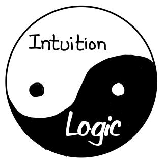

The limbic and reptilian parts of the human brain have had more time to evolve. Compared to these two parts, the frontal lobe of the human brain where logic resides is a more recent phenomena. Ironically, the logical functions carried out by this part of the brain, which makes man distinct from other animals, are the ones most easily replicated by machines.
The entire human body, not just the deliberate thinking portion of it, should be considered to be a neural network. Using only the thinking portion of the human body for decision making purposes is sub-optimal. This is especially true for a human that has actively engaged in calibrating his body for a specific purpose. Prime examples are deliberate cultivation and heavy reliance on muscle memory by professional athletics, chefs, actors, music composers and detectives.
Intuitive gut feel can be considered muscle memory cultivated over time for specific functions yet expressed as formalized equations. To free up time, individuals can actively convert what they "intuitively know" into formalized equations and have the corresponding functions delegated to machines. Thereafter they could either further compound the effects of this process by building up muscle memories in other domains or sit by the beach and do nothing.
Humans will always have a role available to play in the future regardless of society's degree of automation.
Related readings
- [*The AI Economy*, Roger Bootle](https://garyteh.com/2020/03/the-ai-economy-roger-bootle/)
- *[The second machine age, Erik Bryonjolfsson and Andrew Mcafee](https://garyteh.com/2018/04/book-summary-the-second-machine-age/)*
- [*Learnings on the subject of mindfulness*, Gary Teh](https://garyteh.com/2018/01/summary-of-learnings-into-the-subject-of-mindfulness/)
- [*George Soros, the unauthorized biography*, Robert Slater](https://garyteh.com/2020/02/book-summary-george-soros-the-unauthorized-biography/)
- [*Liar's poker*, Michael Lewis](https://garyteh.com/2020/04/liars-poker-by-micheal-lewis/)
- [*La Grande Maison Tokyo*](https://www2.dramacool.movie/drama-detail/grand-maison-tokyo)
- *Thinking fast and slow*, Daniel Kahneman
- [*Gut Feelings*, Gerd Gigerenzer](https://garyteh.com/2018/06/key-take-aways-from-gut-feelings/)
- [*Takuya Kimura's acting career*](https://www.dramacool.info/star/kimura-takuya.html)
- [*Masquerade hotel*](https://mydramalist.com/25964-masquerade-hotel)
- [*La Grande Maison Tokyo*](https://mydramalist.com/36289-nichiyo-gekijo)
- [*Eriko Hitagawa's screenwriting career*](https://en.wikipedia.org/wiki/Eriko_Kitagawa)